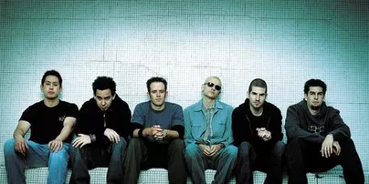
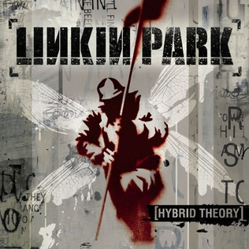
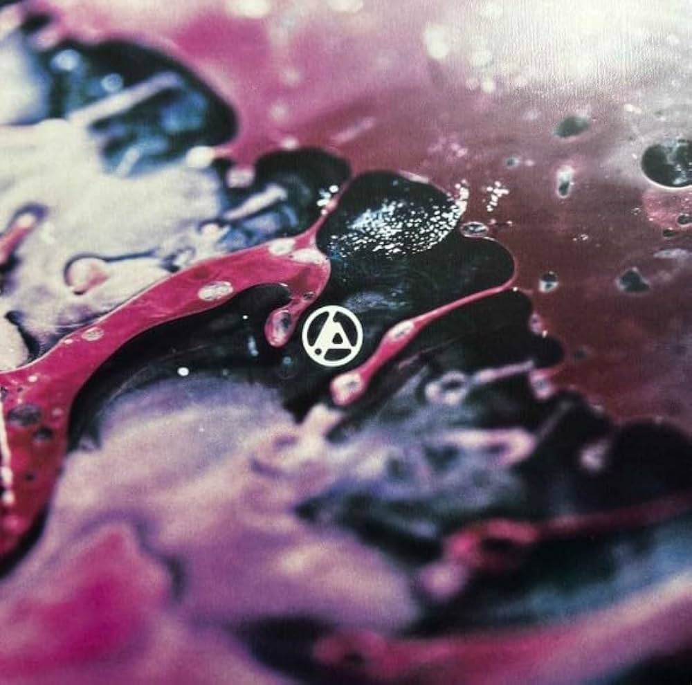

-O começo:
-Feito por: Giovana
-A banda Linkin Park foi formada em 1996 em Agoura Hills na California, pelos membros Mike Shinoda, Brad Delson e Rob Bourdon. Eles se juntaram a Joe Hahn, Dave Farrell e o antigo vocalista Mark Wakefield, porém antes a banda tinha o nome de "Xero".
-Então, depois de algumas dificuldades, Mark Wakefield saiu da banda e assim, em 1999, Chester Bennington juntou-se a banda. Com sua entrada, a banda mudou de nome para Hybrid Theory e depois, para Linkin Park.
-Em 24 de outubro de 2000, Linkin Park lançou seu primeiro álbum "Hybrid Theory", sendo o mais famoso da banda, eles revolucionaram o rock misturando rap, metal e música eletrônica. Depois disso, a banda lançou mais albuns como: Meteora, Minutes to Midnight, A Thousand Suns, LIVING THINGS, The Hunting Party e One More Light.O álbum One More Light (2017) sofreu grande rejeição por abandonar o rock pesado e nu-metal em favor de uma sonoridade pop eletrônica radiofônicas, sendo o último álbum de Chester Bennington.
|
 |
 |
-A perda de Chester
-Em 20 de julho de 2017, Chester Bennington se suicidou aos 41 anos, o artista tinha depressão e lidou com o abuso de substâncias e traumas ao longo da vida. A banda sofreu uma parada devastadora e muitas coisas ficaram sem resposta. Após sua morte Mike Shinoda liderou homenagens e foi a voz pública que ajudou os fãs a lidarem com a dor da perda.-O recomeço:
-7 anos depois, em setembro de 2024, a banda começou a fazer música novamente, assim eles conheceram a nova vocalista Emily Armstrong e o novo baterista Colin Brittain, e lançaram o álbum From Zero, que marcou a volta do grupo.
-Emily Armstrong recebeu muitas críticas ao entrar na banda, muitas pessoas disseram que eles quiseram substituir o Chester e que a banda tinha acabado, e a maioria das críticas foram feitas apenas por ela ser uma mulher. Mas apesar de todo o hate, a banda seguiu em frente. Linkin Park vive uma fase de enorme sucesso global após concluir a From Zero World Tour no final de junho de 2026. A banda atingiu a marca de 100 shows realizados ao redor do mundo com sua nova formação.
|
 |

|